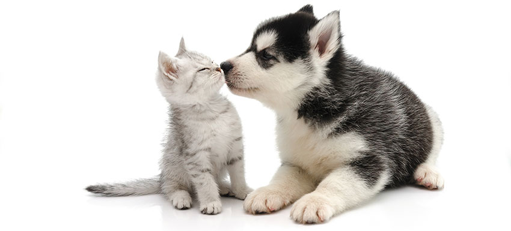
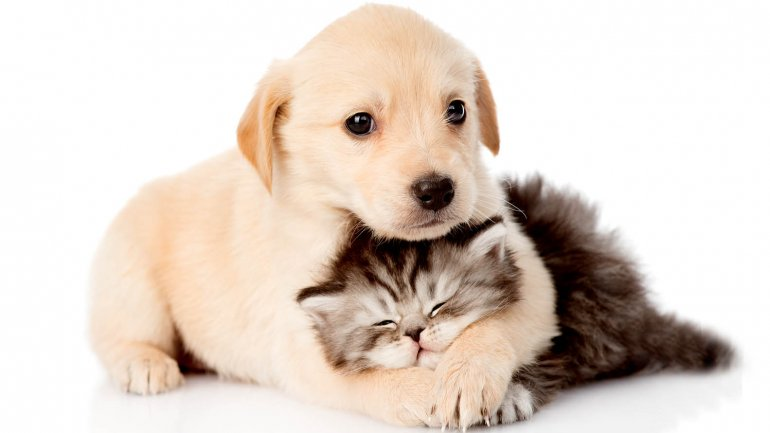

PRICING:PRECIO POR NOCHE Y NÚMERO DE ANIMALES Un perro: 14,50€/noche Dos perros: 21,50€/ noche Tres perros: 26,50-29,50€/ noche (dependiendo del tamaño) Cuatro perros: 32€/ noche |
 | |
|
RAZAS TOYS Entendemos por raza toy a los chihuahuas, yorkshire, pinscher, bichón maltés y los mestizos de éstas, siempre y cuando no superen los 7 kg de peso Un perro: 12,50€/noche Dos perros: 19,50€/noche (ambos de menos de 7 kg) DESCUENTOS A PARTIR DE 12 DÍAS. SERVICIO DIURNO DE GUARDERÍA por 5€ Si su perro es demasiado nervioso y necesita más ejercicio del que hace, o si pasa demasiadas horas solo; su solución es nuestro servicio diurno de guardería. Usted nos puede traer a su perro durante el día para que no esté solo y juegue y se relacione con otros perros. Debido a la distancia este servicio no es aconsejable si usted vive en Madrid capital |
 | |
|
CONDICIONES DE PAGO Y MÉTODOS ADMITIDOS Para estancias inferiores a un mes, el total se abonará al final. Para estancias superiores a un mes, se abonará la mitad a la recogida del animal y la otra mitad a la entrega. Si la estancia es por un periodo indeterminado se abonarán 15 días por adelantado y se irán haciendo pagos periódicos hasta la retirada del animal. En este caso NUNCA se podrá tener sin abonar más de 15 días. Se puede pagar tanto en efectivo como con tarjeta o por transferencia bancaria; en este último caso, el dinero tendrá que estar en la cuenta de destino antes de la retirada del animal. |

|